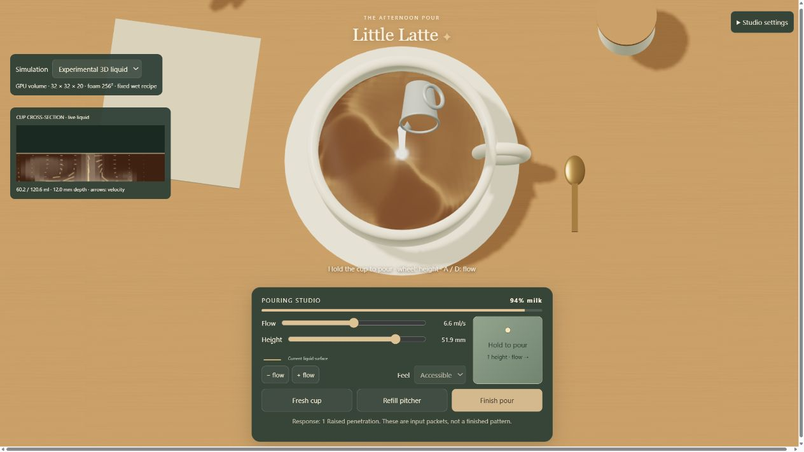
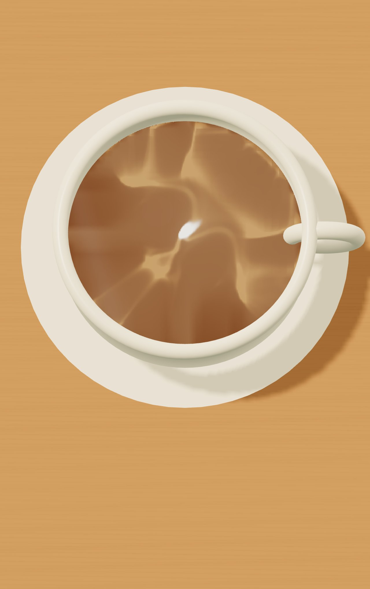
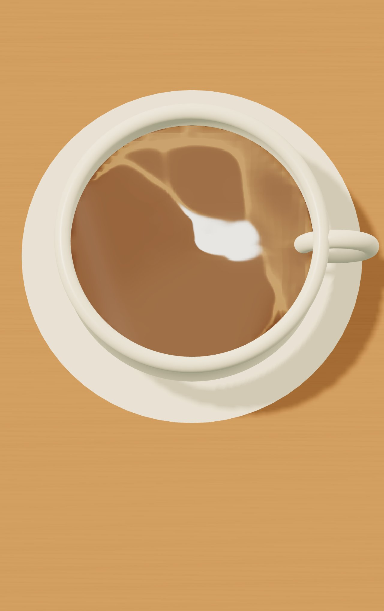
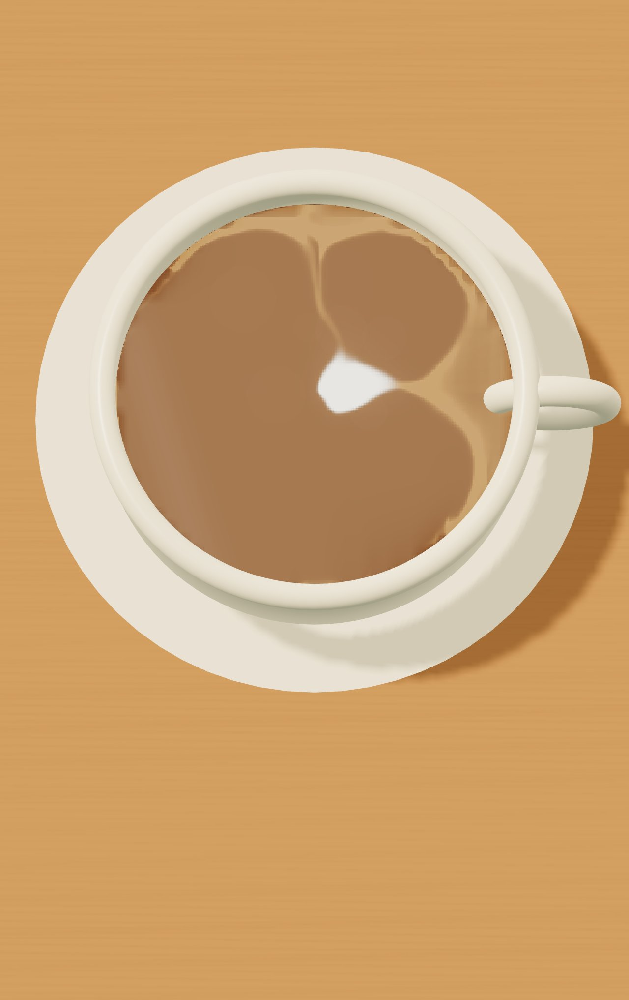

Little Latte · Experimental GPU liquid
Rendered simulation results from causal input packets. Bulk behavior improves; foam remains too concentrated and fine bands merge. These images are evidence, never simulation inputs.
Open experiment · Measurements and 61 checks · Full report

Active raised pour: actual concentration and velocity sampled through the cup.Six responses

1. Raised penetrationBulk mixing and carried crema; little surviving foam.
2. Low poolFoam remains visible, but compresses into a small patch.
3. Millimeter movementEdges respond; distinct fine bands remain unresolved.

4. Dry move and restartNo wet input bridges the gap; carried deposits continue to move.

5. Second pourExisting foam and crema deform; excessive compression remains.
6. Finishing strokeWeak raised input entrains too much foam for controllable art.
Desktop and portrait layouts were tested. Real-phone GPU performance and real multitouch remain unverified.